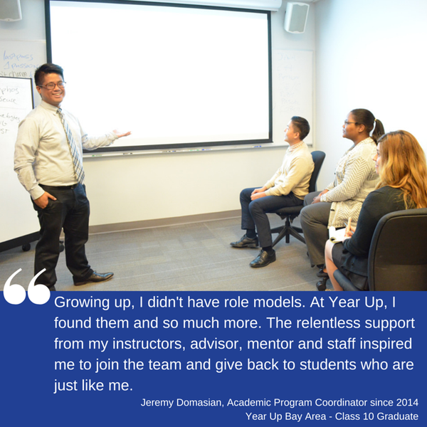

Year Up’s mission is to close the Opportunity Divide by providing urban young adults with the skills, experience, and support that will empower them to reach their potential through professional careers and higher education.
We achieve this mission through a high support, high expectation model that combines marketable job skills, stipends, internships and college credits. Our holistic approach focuses on students’ professional and personal development to place these young adults on a viable path to economic self-sufficiency.
Year Up Bay Area is a one-year, intensive training program that provides low-income young adults, ages 18-24, with a combination of hands-on skill development, college credits, and corporate internships. Since opening our doors in 2008, we have helped over 500 young adults cross the Opportunity Divide in the San Francisco Bay Area. 88% of our graduates are employed (earning competitive wages) or are attending college within four months of completing the program.
Year Up starts each student in the Learning & Development phase or L&D. This starts each student from the ground up. They are taught Business Communication Skills and Technical Skills to build a nice foundation. This keeps students from learning any habits that should not be used in a corporate setting. The phases are separated in three different modules. There are seven weeks in each module that students need to go through. Module one starts their base on basic skills from communication to tech. Module two gets tougher as they are tested on every content that they have learned from both modules. Module three is focused on the track that both students and program managers feel they fit best.
Once a student meets the requirements and grades from all three modules. They are then chosen for certain corporate internships. This internship is six months long and students work in a corporate environment.